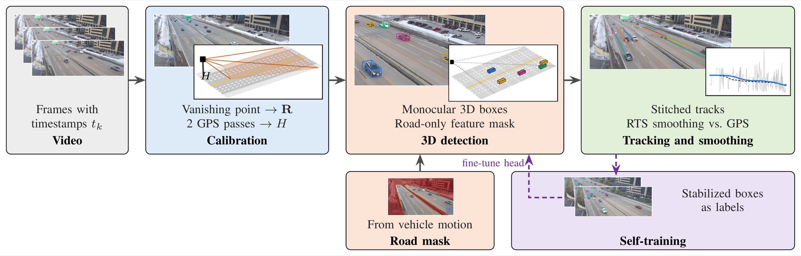
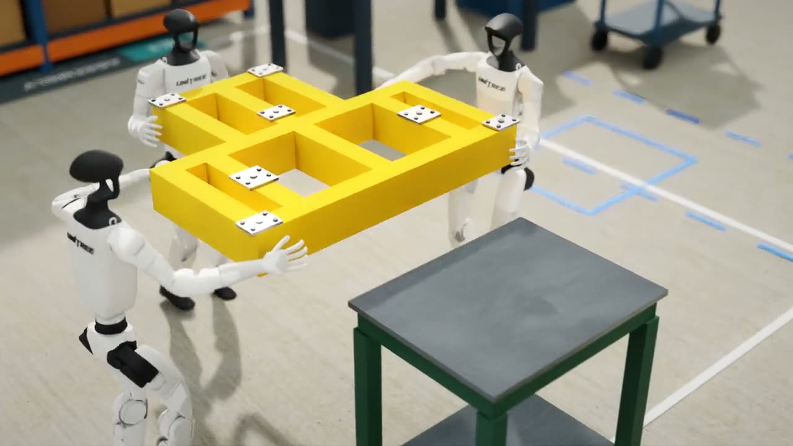
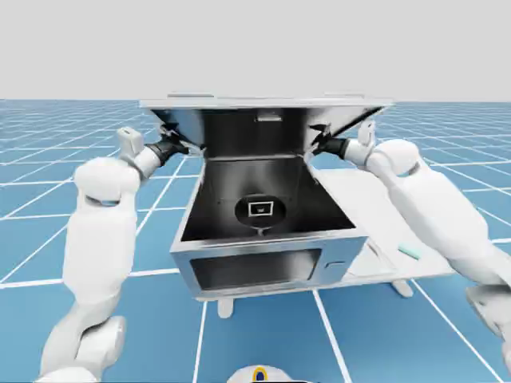
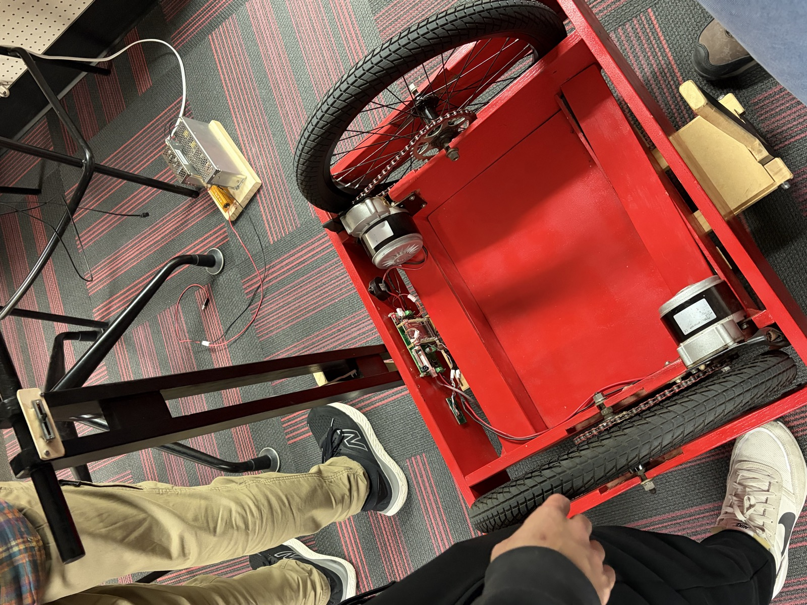
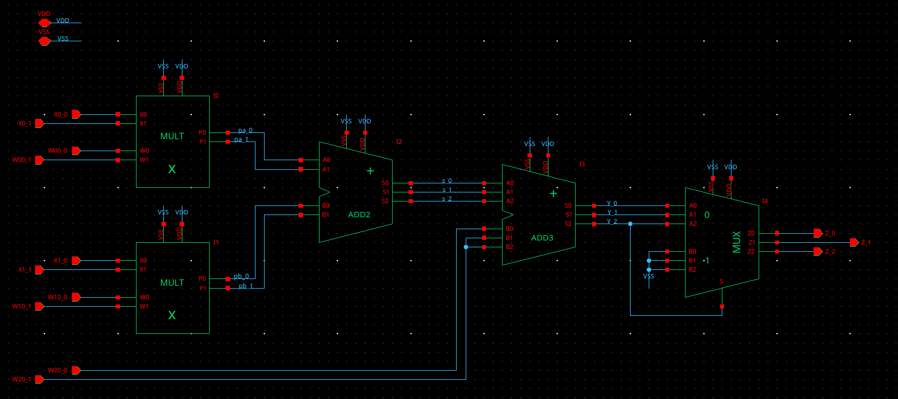

Research
Vehicle Trajectory Extraction from Roadside Cameras with Self-Trained Monocular 3D Detection
IEEE Intelligent Vehicles Symposium (IV) 2027 · in progress
PaperProject pageVideo

Vehicle Trajectory Reconstruction and Automated Vehicle Identification Using Roadside Cameras
Transportation Research Part C: Emerging Technologies · in progress
PaperProject page
*Equal contribution
Experience
Projects

RTOS: Real-to-Sim Robot Deployment
One site video becomes a robot-ready digital twin for testing before deployment.

ECM 2027 Embodied AI Challenge
Imitation learning policies for a mobile bimanual robot servicing a semiconductor chamber.
image
Humanoid Locomotion with RL
PPO walking policy for the Booster K1, raising top speed in sim from 2.4 to 4.5 m/s.
image
LifeVision
Pool camera that flags drowning risk, with simulated scenarios for ground truth.

Segway Balance Controller
PID balance control on FPGA, closing timing at 333 MHz.
Side projects

7nm Neuron Chip
Transistor-level neural network neuron for wearable activity detection in ASAP7.